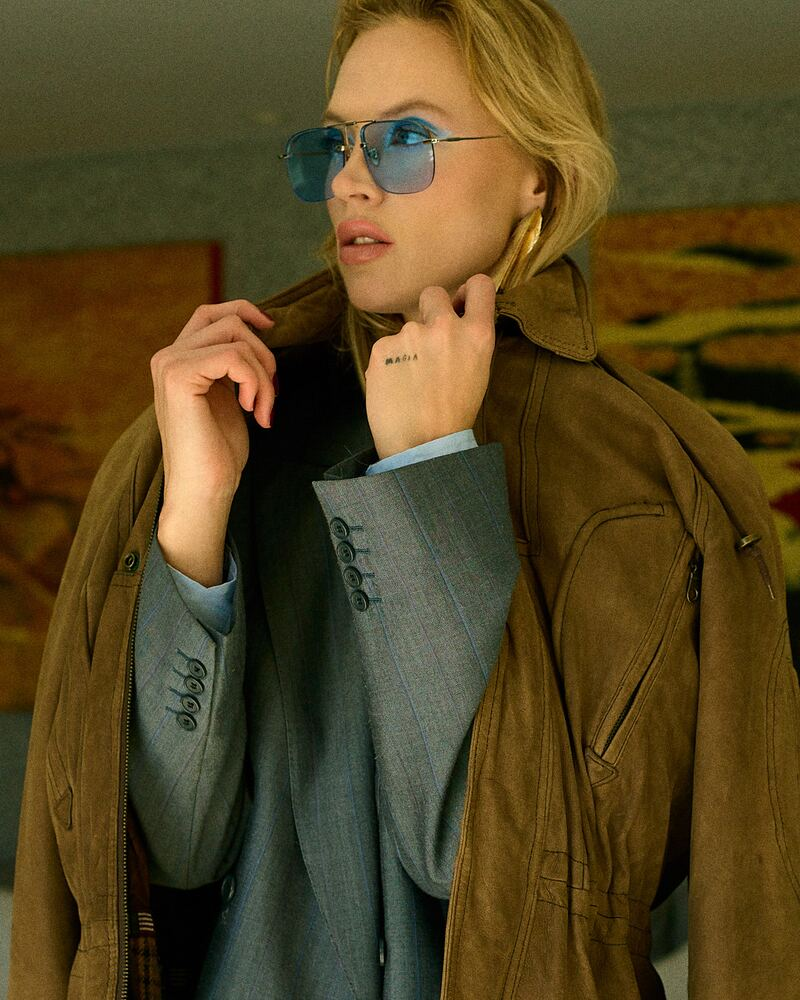
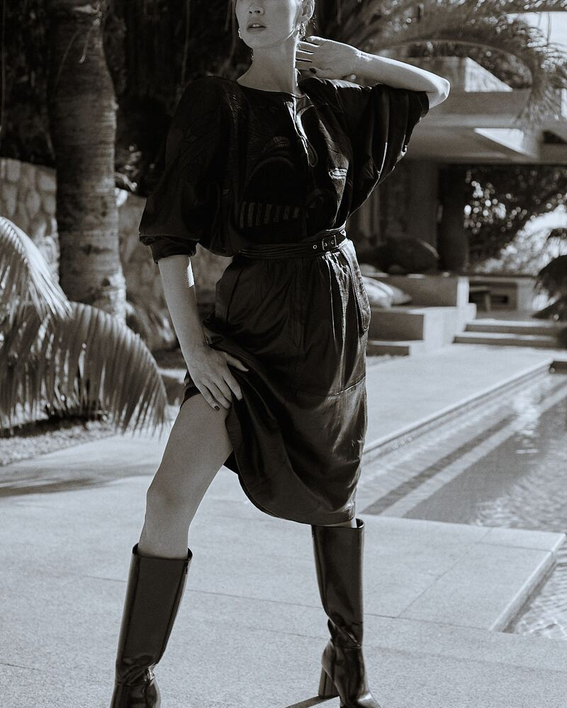
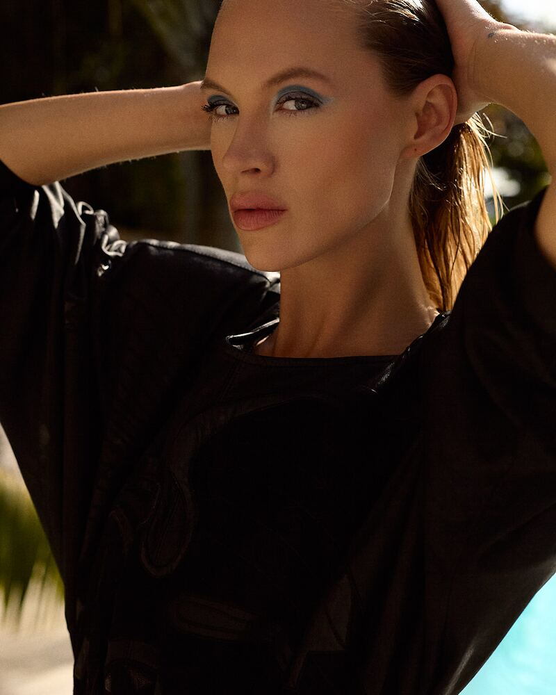
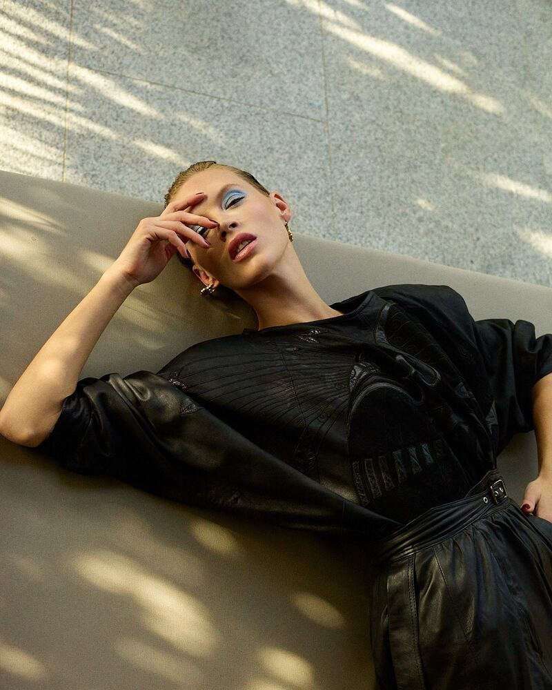
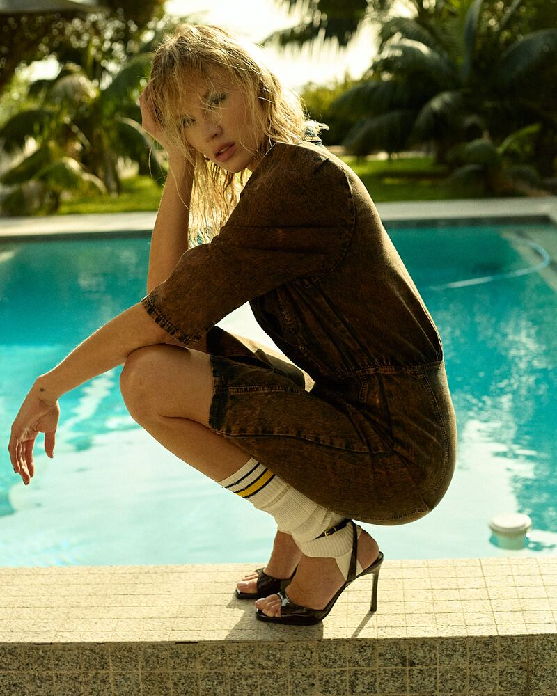
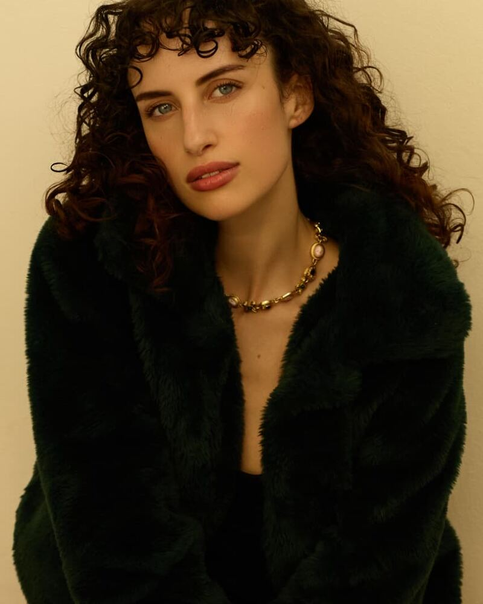
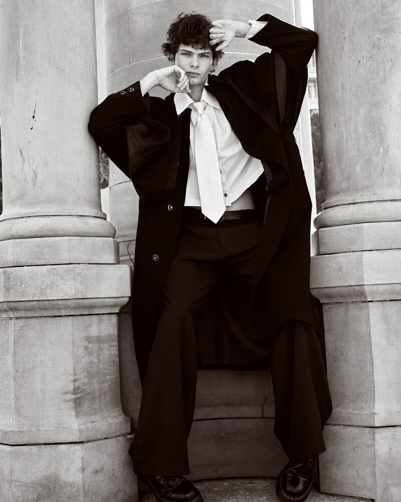

Model Portfolio
Model Portfolio
Agency-level images that elevate your presence — whether you’re building a portfolio or a brand. Agency-ready portfolios, and the digitals and polaroids that go with them.







Ready to shoot?
Tell me what you’re building and I’ll tell you what the shoot should be.